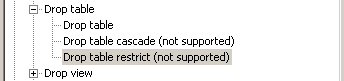

Use this command to remove a table and all its data from the database.
DROP TABLE base-table-name [{CASCADE | RESTRICT}]
To see whether the cascaded or restrict syntax is supported, look it up in the ODBC tree under 'SQL Supported standard / Drop Table'.

See also: ALTER TABLE , CREATE TABLE